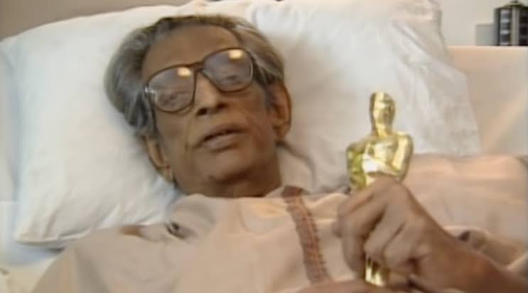

Ray received many awards, including 36 National Film Awards by the Government of India, and awards at international film festivals. At the 11th Moscow International Film Festival in 1979, he was awarded with the Honorable Prize for the contribution to cinema. At the Berlin International Film Festival, he was one of only four filmmakers to win the Silver Bear for Best Director more than once and holds the record for the most Golden Bear nominations, with seven. At the Venice Film Festival, where he had previously won a Golden Lion for Aparajito (1956), he was awarded the Golden Lion Honorary Award in 1982. That same year, he received an honorary "Hommage à Satyajit Ray" award at the 1982 Cannes Film Festival. Ray is the second film personality after Charlie Chaplin to have been awarded an honorary doctorate by Oxford University.
He was awarded the Dadasaheb Phalke Award in 1985, and the Legion of Honor by the President of France in 1987. The Government of India awarded him the Padma Bhushan in 1965 and the highest civilian honour, Bharat Ratna, shortly before his death. The Academy of Motion Picture Arts and Sciences awarded Ray an Honorary Award in 1992 for Lifetime Achievement. In 1992, he was posthumously awarded the Akira Kurosawa Award for Lifetime Achievement in Directing at the San Francisco International Film Festival; it was accepted on his behalf by actress Sharmila Tagore.
